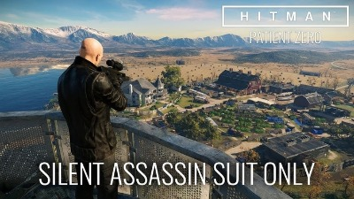

Description
Plot
Hitman is a third person action-stealth game developed by IO Interactive, where you get to play as Agent 47, a professional assassin. He goes to different locations around the world, solving a series of assassinations that seem to be unconnected. But this is not the only thing Agent 47 must do during the game: he must eliminate the targets given to him in each destination. The main story consists of 5 episodes, each of them with one map and their respective objectives.
Apart from the main plot, the game has an alternative stroyline called The Sarajevo Six, in which Agent 47 has to eliminate 6 former members of SIGMA who committed war crimes and evaded the prosecution. The difficulty incrases more and more each time you kill one of the 6 targets, because the ones who are still alive get more and more paranoid, increasing the security. There is one final bonus mission called patient zero, in which a cult is trying to attack with a bio-weapon. IN your first mission, your target is the leader of the cult, in the second mission you have multiple targets (the personel purposely infected to spread the bio-weapon), and in the final mission you take out the last infected person that could spread the virus.
Gameplay
As the player, you have multiple ways to assassinate the objective and complete the mission: from blending in and making the death look like an accident, to staying far from range and use a rifle. The game also shows its complexity by giving you different ways of approaching the target: for example: you could hear a phone call to get extra information of where the objective will be. But apart from the approaches, the game gives you a wide variety of weapons: guns (with equipment such as silencers), or the signature of Agent 47: the fiber wire. However, the enviroment, being as interactive and realistic as it is, allows you to pick up objects to use as weapos, such as bricks, a wrench, and even coins to throw, distracting the guardss and making it easier to get to your objective. 
Impact
Why is it special
What makes Hitman special: this game is the 6th to enter the Hitman game series, and it showed a big gap with its predecessors in many ways. Of course, there is an easily noticeable change in the graphics, but it’s the gameplay what makes it so much better: bigger maps, better AI stopping you from completing the missions and the complexity in the different approaches are some of the factors that made such a gap with older games of the serie.